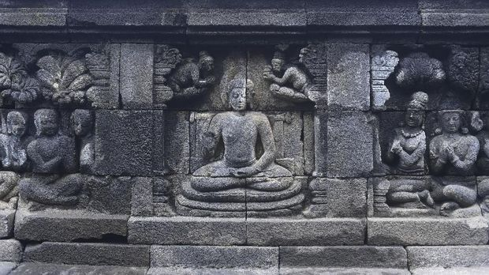

RumahKita
Indonesia
RumahKita
Indonesia
Pusaka Kolosal Magelang, Jawa Tengah
Candi Borobudur adalah salah satu keajaiban arsitektur dunia yang memukau, terletak di Pulau Jawa, Indonesia. Candi ini adalah sebuah pusat spiritual dan kultural Buddha yang terkenal, serta menjadi simbol penting dari warisan budaya Indonesia. Arsitektur Candi Borobudur menggabungkan keahlian teknik, seni, dan keagamaan yang luar biasa.
Candi Borobudur dibangun pada abad ke-8 oleh dinasti Syailendra, dengan Raja Samaratungga sebagai pelopor utamanya. Pembangunan candi ini memakan waktu sekitar 75 tahun dan melibatkan ribuan pekerja terampil. Candi ini ditinggalkan dan terlantar selama berabad-abad, hingga akhirnya ditemukan kembali pada awal abad ke-19 dan menjalani proses pemulihan besar-besaran.
Candi Borobudur memiliki desain yang sangat unik dan kompleks. Terdiri dari sembilan tingkat, candi ini dibangun dengan memadukan gaya arsitektur India dan Indonesia. Bagian bawah candi didominasi oleh platform persegi dengan beberapa teras, sementara bagian atas membentuk stupa besar yang berfungsi sebagai pusat religius.
Salah satu ciri khas Candi Borobudur adalah relief batu yang mengelilingi dindingnya. Terdapat lebih dari 2.600 relief yang menggambarkan ajaran Buddha, perjalanan spiritual, serta kehidupan sehari-hari masyarakat pada masa itu. Relief ini merupakan karya seni yang luar biasa, dengan detail dan kehalusan yang memukau. 
Arsitektur Candi Borobudur dipenuhi dengan simbolisme dan filosofi yang mendalam. Candi ini mencerminkan konsep kosmos dalam ajaran Buddha, dengan struktur dan tata letaknya yang melambangkan alam semesta dan perjalanan menuju pencerahan. Bagian atas candi melambangkan surga, sementara bagian bawahnya melambangkan dunia manusia yang dipenuhi dengan penderitaan.
Candi Borobudur merupakan bukti keberagaman budaya Indonesia yang kaya. Arsitektur candi ini mencerminkan penggabungan unsur-unsur Hindu, Buddha, dan Jawa kuno. Candi ini juga menjadi tujuan ziarah bagi umat Buddha, serta menjadi daya tarik wisata yang populer di Indonesia.
Sejak ditemukan kembali pada abad ke-19, Candi Borobudur telah menjalani berbagai proses pemulihan dan pemeliharaan. Upaya restorasi dilakukan untuk menjaga keutuhan dan keaslian struktur serta keindahan seni candi. Pemerintah Indonesia bersama dengan lembaga internasional berkomitmen untuk melindungi dan melestarikan warisan budaya ini bagi generasi mendatang.